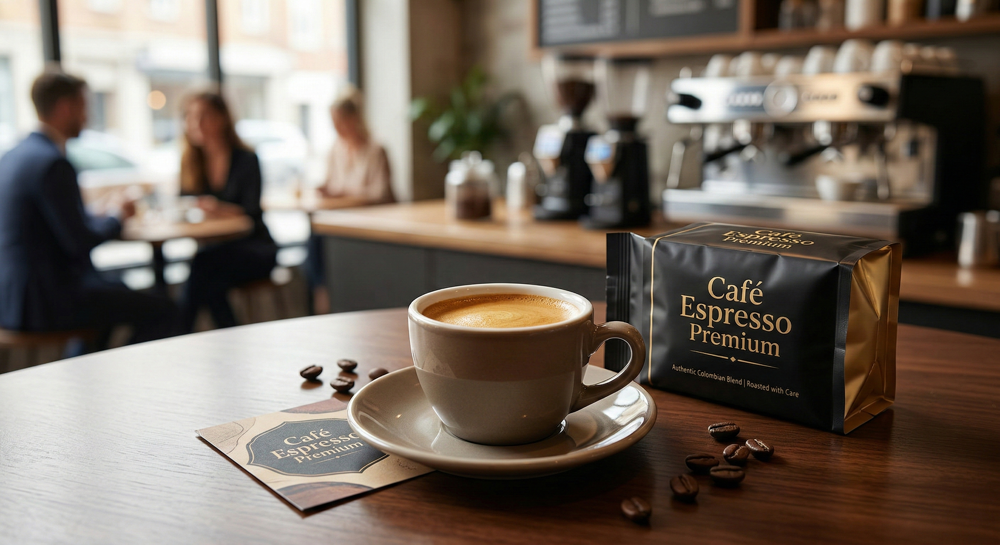
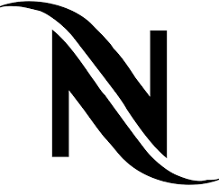
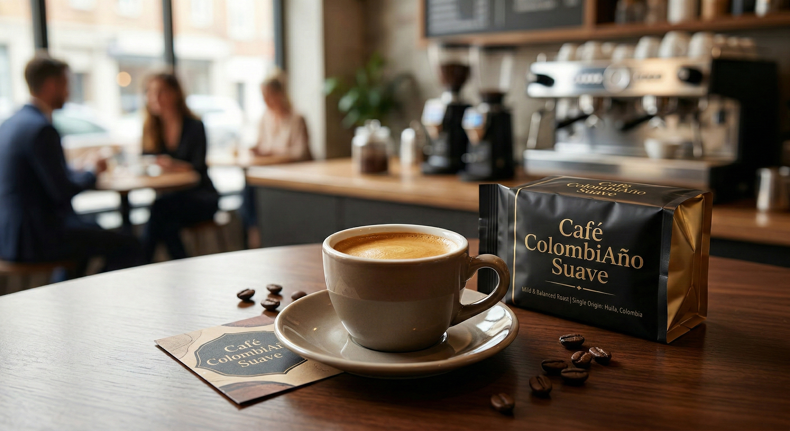
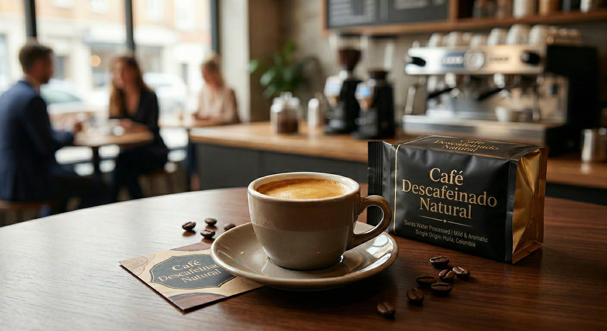
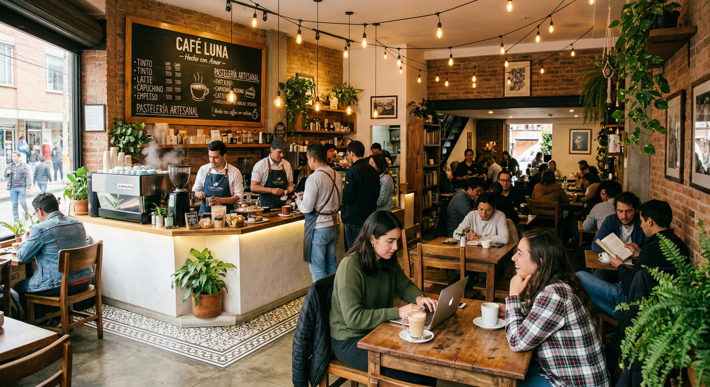
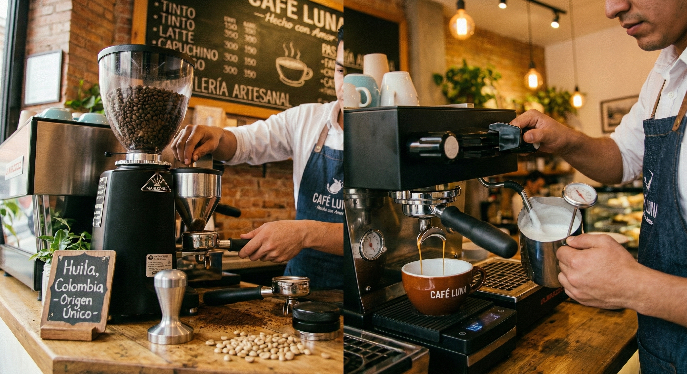
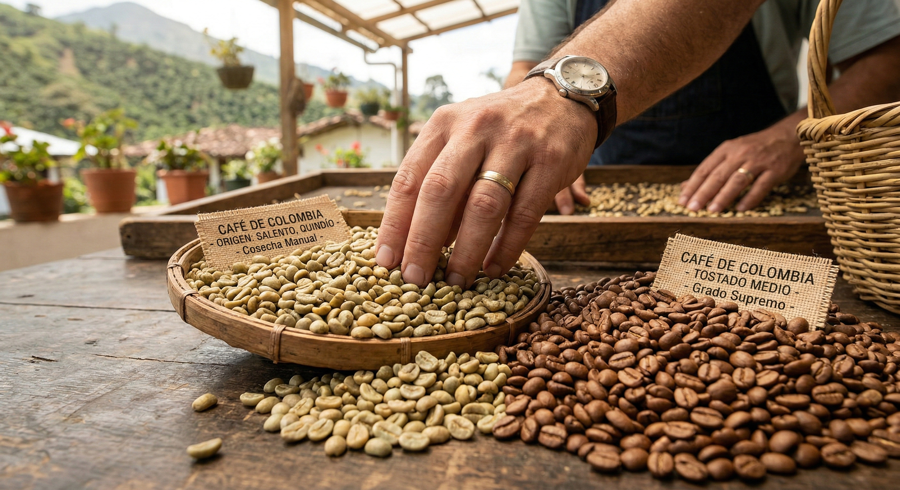
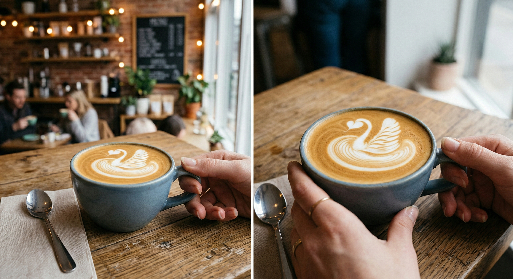
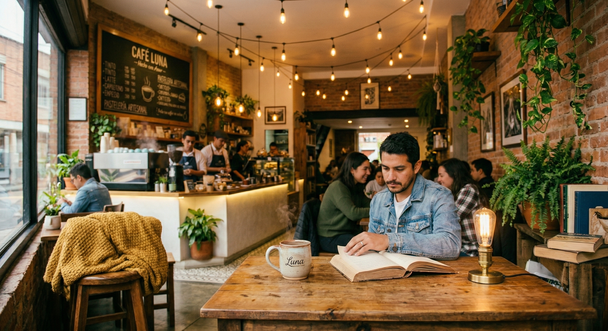

Cafe Espresso Premium
Intenso y con cuerpo. Ideal para los amantes del cafe fuerte.
$12.000

Somos una cafeteria dedicada a ofrecer la mejor experiencia en cafe de especialidad. Nuestros granos son seleccionados cuidadosamente de las mejores regiones cafeteras del mundo.
Cafe Aroma nacio de la pasion por el cafe de calidad. A continuacion, los momentos mas importantes de nuestra trayectoria:
| año | Evento |
|---|---|
| 2010 | Fundacion de Cafe Aroma en el centro de la ciudad |
Descubre nuestra seleccion de cafes premium:

Intenso y con cuerpo. Ideal para los amantes del cafe fuerte.
$12.000

Suave y aromatico. Perfecto para cualquier momento del dia.
$10.500

Todo el sabor sin la cafeina. Proceso 100% natural.
$11.000
Conoce nuestras instalaciones y momentos especiales:
|
 |
 |

|
|
 |
 |
 |
Visitanos en nuestra ubicacion principal: